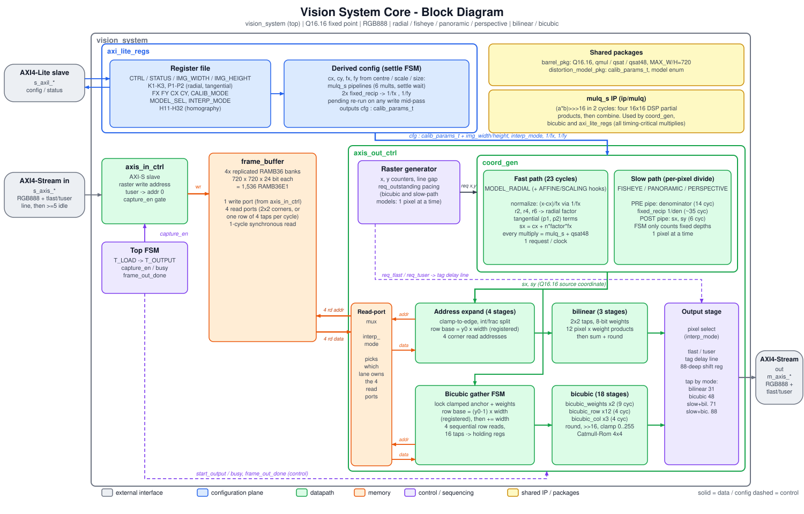

Streaming image-processing IP / SystemVerilog
Correct the lens.
Keep the pixels moving.
A frame-buffered 2-D remap engine with AXI4-Stream video, AXI4-Lite configuration, selectable distortion models, and bilinear or bicubic interpolation.
One frame, remapped
01 / DATA FLOWCapture first
The input controller writes a complete frame to the replicated frame buffer. The global remap can sample from anywhere in the source image, so line buffers alone are not sufficient.
Map coordinates
coord_gen computes source coordinates from calibration, distortion coefficients, and the selected model. Radial mapping is the fast path; division-based models are paced per pixel.
Interpolate & stream
The output controller reads the source footprint, interpolates each output pixel, and recreates frame and line markers on AXI4-Stream.
System at a glance
02 / INTEGRATION
Read the architecture notes →Choose the trade-off
03 / MODES| Mode | Mapping | Interpolation | Behavior |
|---|---|---|---|
| Default | Radial + tangential | Bilinear | Fully pipelined, 1 pixel/clock |
| Higher quality | Radial + tangential | Bicubic | Sequential 4-row gather; 48 cycles/pixel |
| Wide-angle / perspective | Fisheye, panoramic, homography | Either | Per-pixel reciprocal; raster requests are paced |
Affine and scaling selectors are reserved hooks and currently fall back to identity mapping.
Useful entry points
04 / SOURCERTL top
src/vision_system.sv
Frame sequencing and top-level integration.
Control surface
AXI4-Lite register map
Geometry, model, interpolation, and status registers.
Build & verify
make test-sv runs the SystemVerilog image regression.make synth runs utilization and estimated timing.